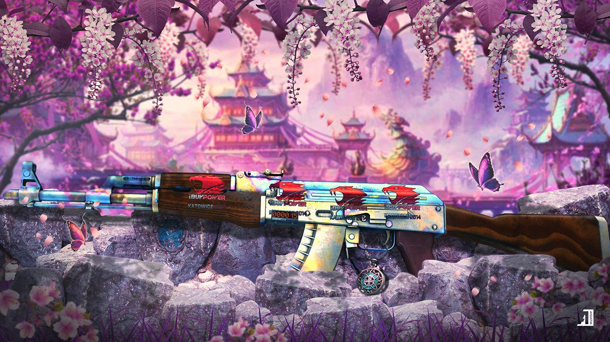

origem
Ano de criação:2012
País de origem:Estados Unidos
Autor / Desenvolvedora:Valve Corporation e Hidden Path Entertainment
Ano de criação:2012
País de origem:Estados Unidos
Autor / Desenvolvedora:Valve Corporation e Hidden Path Entertainment
Counter-Strike: Global Offensive é um jogo de tiro em primeira pessoa (FPS)
focado no combate entre duas equipes: terroristas e contra-terroristas.O objetivo
varia entre plantar/desarmar bombas, resgatar reféns ou eliminar o time adversário.
O jogo ficou extremamente popular no cenário competitivo, sendo conhecido por sua
jogabilidade estratégica,precisão nos tiros e forte dependência de trabalho em equipe.
Também possui um sistema de economia dentro das partidas,onde os jogadores compram
armas e equipamentos a cada rodada.
931 horas
1312 horas
